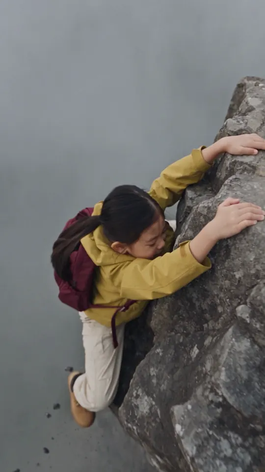
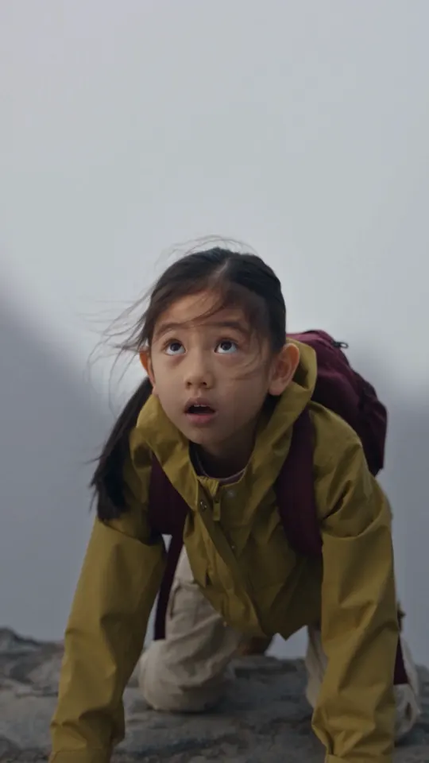
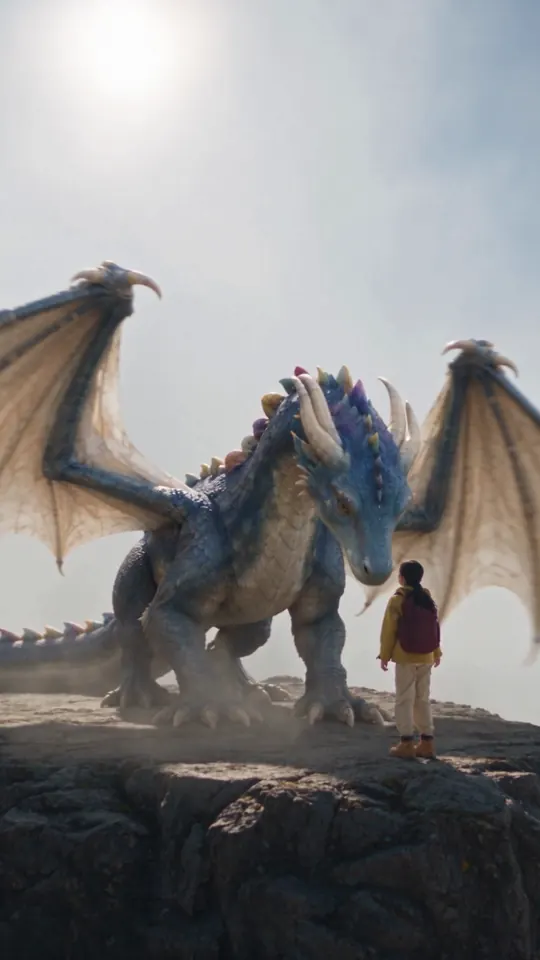
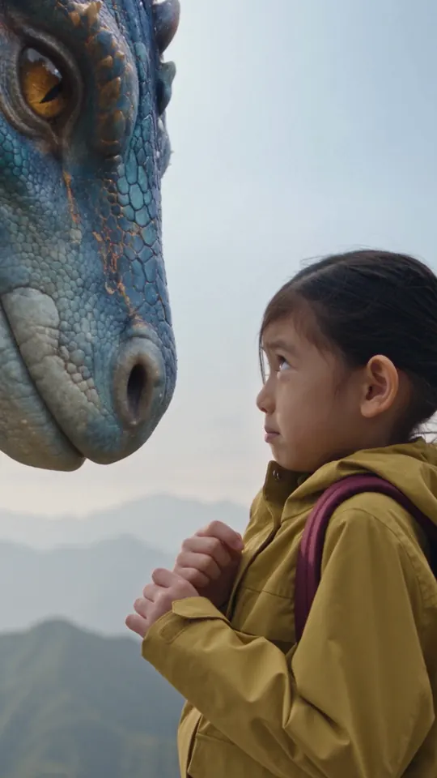
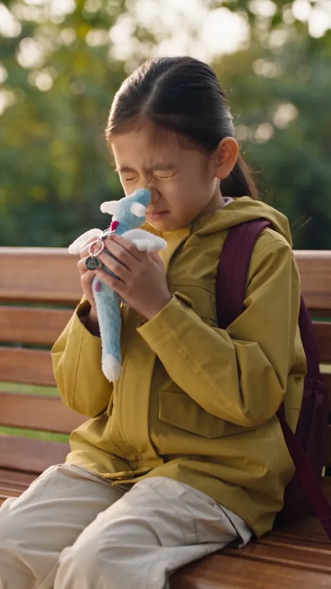

Idea
A 25-second vertical ad for ViaToyz. A girl meets a real dragon on a misty peak; when it sneezes she shuts her eyes — and opens them on a park bench, holding the sky-dragon plush keychain. The product is the payoff, not the opening shot.
AI + Video
Short-form video, commercial clips and visual experiments — I bring the concept and the visual direction, and use AI and editing to make it real.
Short-form for ViaToyz
Vertical ads and story shorts for ViaToyz, an independent e-commerce brand — concept, AI production and edit.
Storyboard & prompt direction
A 25-second vertical ad for ViaToyz. A girl meets a real dragon on a misty peak; when it sneezes she shuts her eyes — and opens them on a park bench, holding the sky-dragon plush keychain. The product is the payoff, not the opening shot.

0–4s · The climb — show the height
4–7s · A shadow in the mist
7–12s · The dragon lands
16–18s · The sneeze — eyes shut
18–20s · Same pose, back to realityPrompt excerpt
【影片設定】25秒，9:16直向，真人奇幻冒險短片，電影級寫實生物質感。故事由小女孩攀上山頂、遇見真龍開始，再透過真龍打乞嗤切回現實，揭曉天空龍毛公仔掛飾。
18–20s · the cut
在女孩閉眼縮肩的一刻直接接鏡……前後兩鏡保持女孩臉部位置、大小、面向及閉眼姿勢對應。
Direction notes
25 seconds, vertical, with two lines of Cantonese dialogue: 「我……路過咋。」 and 「原來你想跟我返屋企。」
Watch the final video